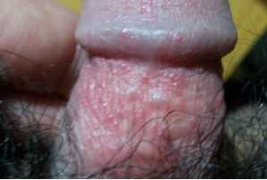

Online registration saves time, worry, money and trouble, and it only takes 30 seconds to register easily.Men's Health Toll Free Line:9851349099
Pimple on glans - need doctor for diagnosis.
Experts answer questions：There are many reasons for the growth of small bumps on the male glans, the common ones are balanitis and genital warts. When the patient has small red bumps on the glans, don't panic, and must go to a regular and professional male hospital for examination and symptomatic treatment as soon as possible.
Expert analysis: male glans long pimple common two diseases
1. Genital warts
Also known as genital warts or venereal warts, the pathogenic system is human papillomavirus. The virus is a DNA virus with a high degree of host and tissue specificity, and only invades human skin and mucous membranes. The virus is inoculated in the local area through the skin and mucous membrane of local slight damage, and after a certain incubation period, cauliflower-like and cockscomb vegetation appear.
【Who must accept the examination and treatment of genital warts】
In fact, early detection and early treatment of genital warts can make a complete recovery, but patients often lose the best treatment opportunity due to early neglect, which increases the difficulty of treatment. In the future, they will continue to grow, increase, and increase in number. They can also fuse with each other to form papillary, cockscomb, pebble-like, and cauliflower-like appearances. They vary in size and can grow into huge condyloma acuminata warts. Therefore, experts remind that the following groups of people must accept the examination and treatment of genital warts: / Or click to call the only official free consultation : 9851349099
/ Or click to call the only official free consultation : 9851349099
▲ There are small red dots and pimples on the glans, pimples and unidentified growths on the penis and foreskin.
▲ Nipple-shaped, cauliflower-shaped, cockscomb growths, red growths on the foreskin, glans, penis, or anus。
▲ Have close contact with patients with genital warts.
▲ Those who have unclean sex life and have cracks or damage on the genital skin are most likely to be infected with warts at this time.
【Notice】Condyloma acuminatum is highly contagious and harmful for prolonged periods of time
Hazard 1: It is highly contagious and can be transmitted to family members or other people. Genital warts can be transmitted not only through sexual contact, but also through indirect contact with family members or friends through virus-contaminated bath towels, bathtubs, underwear, etc.
Hazard 2: Heavy psychological burden, affecting family harmony. Condyloma acuminata belongs to the category of diseases. Once diagnosed, many patients will bear a heavy psychological burden. When one of the husband and wife is sick, the two parties will be suspicious of each other, which will lead to family disharmony, and may even lead to a marital crisis.
Hazard 3: There is a risk of cancer if there is a long-term death or long-term treatment. The immune system of patients suffering from genital warts is suppressed, and the disease can recur repeatedly for a long time, which is annoying, and finally, it may lead to genital cancer.
PDT Photodynamic Therapy Overcomes Condyloma Acuminatum Recurrence
PDT photodynamic therapy is currently the first choice for the treatment of non-gonococcus and other reproductive infection diseases in the world. It is an advanced treatment technology, with remarkable curative effect and low recurrence rate. The therapy controls the disease from the source of the disease from the perspective of gene and molecular biology, using special effects of traditional Chinese and Western medicine, combined with international advanced technology. Comprehensive cleaning of pathogenic sources, inhibition of pathogen synthesis and replication, rapid removal of pathogens, so as to achieve the purpose of effective treatment. / Or click to call the official and only free consultation line : 9851349099
2. Foreskin balanitis
The pimples on the glans are mostly considered to be the inflammation of the glans caused by the prepuce. The male prepuce is chronically stimulated by urine and smegma for a long time, which can induce balanitis. If the prepuce is not treated, germs and inflammatory secretions Drugs are easy to hide in the foreskin and directly act on the lesion or new tissue structure, exacerbating the disease or causing sexual lesions. Inflammation can be infected along the reproductive tract, causing inflammation of the prostate, seminal vesicles, and epididymis, and can be transmitted to sexual intercourse through sexual intercourse. Partner, in addition, can also cause premature ejaculation and so on.

【What's the matter with the pimple on the glans? What are the classifications of balanitis?】 / Or click to call the only official free consultation line of China Great Wall Health Center: 9851349099
Trichomonal balanitis: Trichomonas are seen in the secretions. Erythema and papules on the affected area gradually expand, with blisters on the surface, and then erode and ooze。
Candidal balanitis: Patients often have long-term use of antibiotics or corticosteroids, or suffer from diabetes. In the early stage, it is flushed, and the surface is scattered with pinpoint-sized red papules, covered with punctate cheese-like secretions and pustules, which erode and ooze in severe cases.
Acute superficial balanitis:It is mostly caused by friction, condom (medicine), detergent and other irritations. Erythema, swelling, erosion, exudation, pain and itching in the affected area.
A new generation of CRS photoconductive gene strengthening joint technology, 4 major breakthroughs let men get rid of balanitis completely
China Great Wall Health Center introduced a new generation of CRS photoconductive gene enhancement combined technology. The core of the system is a high-power megawave host and an automatic monitoring system. The capacitive heating treatment method of the human body directly acts on the affected part, and quickly eliminates inflammation and sterilization. It is a high-tech leading product for the treatment of genitourinary system infections. This treatment method increases the permeability of the inflammatory tissue due to hyperthermia, which can make the selected drug diffuse more easily, and the tissue absorb and metabolize better, so as to achieve the purpose of comprehensive treatment of inflammation, and will not cause any damage to the patient during the treatment process. And pain, precise treatment, comprehensive sterilization, shorter course of treatment, and prevention of recurrence.
China Great Wall Health Center is the first professional andrology hospital approved by the Municipal Health Bureau. The hospital is recognized as the first professional male hospital.It is equipped with a full set of international advanced diagnosis and treatment equipment, and has accumulated rich experience in clinical cases in the treatment of small red bumps on the glans caused by various reasons. / Or click to call the only official free consultation line :9851349099
Free consultation appointment hotline: 9851349099
Address：Chuchepati-7, Chabahil, Kathmandu（Near Bhatbhateni）

-
It is first non-profit professional andrology department
What is the best way to treat glans penis?
Most men have the experience of growing fleshy glans. At this time, their first thought is that balanitis is caused...[detailed]
What, foreskin balanitis actually made me unable to be a father, what's going on? [detailed]
What is the cause of long blisters in the male coronal sulcus
Patient online consultation: Physician, I recently found blisters in the coronal sulcus. I checked online that this is related to...[detailed]
Official free consultation hotline:9851349099
Address：Chuchepati-7, Chabahil, Kathmandu（Near Bhatbhateni）